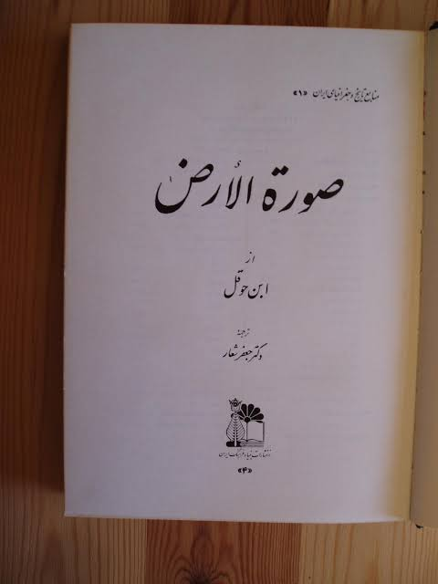
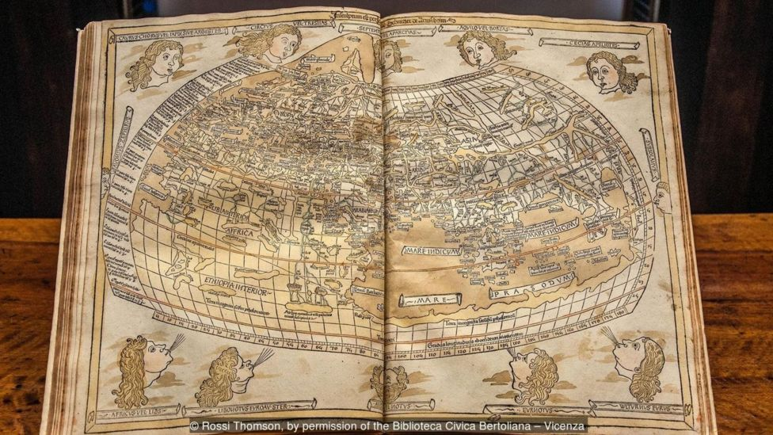
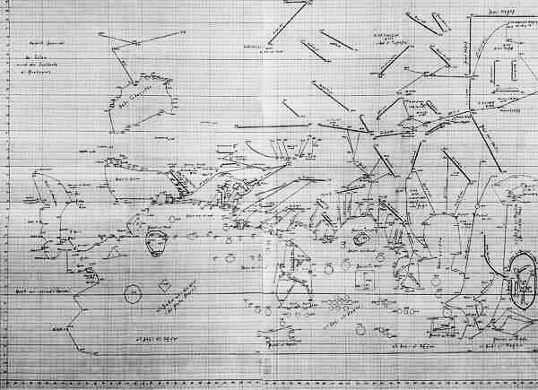

Rekonstruksi Planetarium

Peta abad ke-15 berdasarkan Ptolemeus sebagai perbandingan.
Buku ketiga beliau yang terkenal adalah Kitāb ṣūrat al-Arḍ (Bhs.Arab: كتاب صورة الأرض “Buku Pemandangan Dunia” atau “Kenampakan Bumi” diterjemahkan oleh Geography) yang selesai ditulis pada tahun 833 M. Kitab ini memuat Daftar Koordinat dari 2402 kota, gambaran umum kota tersebut, serta ciri-cirinya secara geografis. Hal ini menjadikan kitab tersebut sebagai sebuah revisi sekaligus melengkapi buku sejenis yang berjudul Geography karangan Ptolemeus.

Hanya ada satu copy dari Kitāb ṣūrat al-Arḍ, yang tersimpan di Perpustakaan Universitas Strasbourg. Terjemahan latinnya tersimpan di Biblioteca Nacional de España di Madrid. Judul lengkap buku beliau adalah Buku Pendekatan Tentang Dunia, dengan Kota-Kota, Gunung, Laut, Semua Pulau dan Sungai, ditulis oleh Abu Ja’far Muhammad bin Musa al-Khawarizmi berdasarkan pendalaman geografis yamg ditulis oleh Ptolemeus dan Claudius.
Isi kitab tersebut diawali dengan daftar garis lintang dan garis bujur dengan urutan berdasarkan “zona cuaca“, yaitu dengan cara mengelompokkan garis lintang yang berurutan dalam suatu kolom sekaligus menguraikannya menjadi beberapa zona cuaca sesuai garis bujur yang berurutan. Paul Gallez (ahli pemetaan dan sejarawan asal Argentina) menyatakan bahwa sistem yang luar biasa ini membuat garis bujur dan garis lintang menjadi lebih sederhana, tidak seperti yang terdapat pada buku lain yang telah ada sebelumnya yang begitu rumit dan membuatnya hampir tidak dapat dimengerti.
